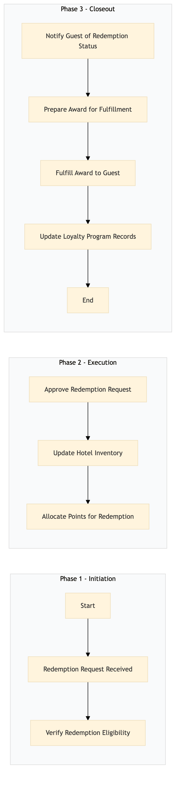

| Role | Steps |
|---|---|
| Front Desk Agent | 1.1 3.1 3.2 3.3 |
| Revenue Manager | 1.2 2.1 2.2 2.3 3.4 |
| Step | Name | Role | System | Input | Output | KPI | Dec? | Exc? | Pain Point / Risk |
|---|---|---|---|---|---|---|---|---|---|
| 1.1 | Redemption Request Received | Front Desk Agent | Oracle OPERA Cloud | Guest request through Marriott Bonvoy app or website | Redemption request logged in Oracle OPERA Cloud | Less than 2 minutes to log the request | N | Y | Handling multiple redemption requests simultaneously |
| 1.2 | Verify Redemption Eligibility | Revenue Manager | Oracle OPERA Cloud, IDeaS G3 RMS | Redemption request details | Eligibility verification report | Less than 5 minutes to verify eligibility | Y | N | Complexity in verifying points and award availability |
| 2.1 | Approve Redemption Request | Revenue Manager | Oracle OPERA Cloud, IDeaS G3 RMS | Eligibility verification report | Approved redemption request in Oracle OPERA Cloud | Less than 1 minute to approve the request | N | Y | Overlooking approval requirements |
| 2.2 | Update Hotel Inventory | Revenue Manager | Oracle OPERA Cloud, IDeaS G3 RMS | Approved redemption request | Updated inventory status in Oracle OPERA Cloud and IDeaS G3 RMS | Less than 2 minutes to update inventory | N | Y | Ensuring accurate inventory tracking |
| 2.3 | Allocate Points for Redemption | Revenue Manager | Oracle OPERA Cloud, Marriott Bonvoy CRM | Approved redemption request and updated inventory status | Points allocated in Oracle OPERA Cloud and Marriott Bonvoy CRM | Less than 1 minute to allocate points | N | Y | Incorrect point allocation |
| 3.1 | Notify Guest of Redemption Status | Front Desk Agent | Oracle OPERA Cloud, Marriott Bonvoy CRM | Allocated points and updated inventory status | Redemption confirmation sent to guest via email or app | Less than 1 minute to send notification | N | Y | Ensuring timely communication with guests |
| 3.2 | Prepare Award for Fulfillment | Front Desk Agent | Oracle OPERA Cloud, SynXis CRS | Redemption confirmation and award details | Award prepared for guest (e.g., room upgrade, dining credit) | Less than 5 minutes to prepare the award | N | Y | Handling special requests or last-minute changes |
| 3.3 | Fulfill Award to Guest | Front Desk Agent | Oracle OPERA Cloud, SynXis CRS | Prepared award and guest details | Award fulfilled and recorded in Oracle OPERA Cloud | Less than 2 minutes to fulfill the award | N | Y | Ensuring smooth transaction flow |
| 3.4 | Update Loyalty Program Records | Revenue Manager | Oracle OPERA Cloud, Marriott Bonvoy CRM | Fulfilled award details | Updated loyalty program records in Oracle OPERA Cloud and Marriott Bonvoy CRM | Less than 1 minute to update records | N | Y | Maintaining accurate loyalty data |
This process outlines how Marriott Bonvoy loyalty points are redeemed and awards are fulfilled at a full-service Marriott hotel.